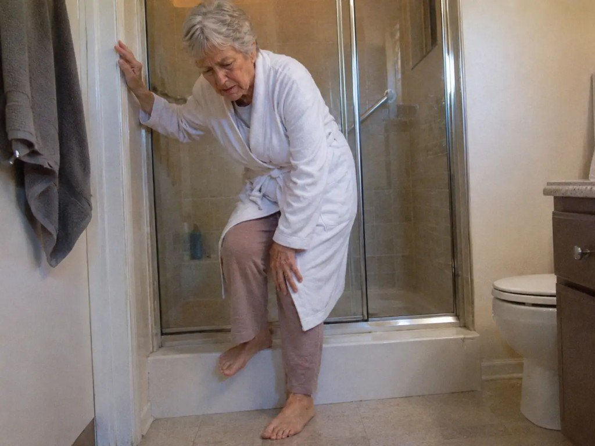
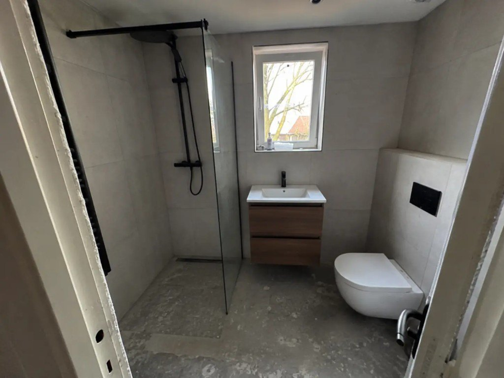

Gezocht: 25 senioren die met een 1-daagse badkamerrenovatie weer veilig willen douchen

U kent het gevoel.
U wilt gewoon even douchen. Maar de tegels zijn glad. De douchebak heeft een hoge rand. En u houdt zich vast aan alles wat u kunt vinden.
Veel senioren herkennen dit.
Niet omdat ze “oud” zijn — maar omdat hun badkamer nooit is gemaakt voor veilig, zelfstandig douchen op latere leeftijd.
Een natte vloer. Een hoge opstap. Geen steun. Dat is geen klein ongemak.
Dat is spanning. Elke ochtend opnieuw.
En die spanning hoeft niet zo te blijven.
Met een 1-daagse badkamerrenovatie wordt uw douche omgebouwd tot een veilige inloopdouche — zonder hoge rand, met antislip en stevige steunpunten. ’s Ochtends begonnen. ’s Avonds weer veilig douchen.
Daarom zoeken wij nu 25 senioren die willen weten of hun badkamer in aanmerking komt.

Controleer GRATIS of u in aanmerking komt voor een veilige badkamerrenovatie.
Ik wil weer veilig douchenOntdek of u in aanmerking komt voor een veilige badkamer
Stap 1: Klik op uw provincie hieronder of op de kaart.
Stap 2: Beantwoord 4 korte vragen en ontvang vrijblijvend advies.
Selecteer uw provincie
Klik op uw provincie om te zien of u in aanmerking komt:
Hoe werkt het?
U wilt weer veilig douchen — zonder weken in de rommel te zitten. Daarom is deze renovatie in één dag te doen.
Eerst controleren we of uw badkamer geschikt is. Daarna plant een adviseur een vrijblijvend gesprek. U zit nergens aan vast.
Wacht niet op een ongeluk. Controleer vandaag nog of u bij de 25 plekken hoort.
Hoe meldt u zich aan?
Stap 1: Klik op uw provincie op de kaart of via de knoppen hierboven.
Stap 2: Beantwoord 4 korte vragen — daarna ontvangt u vrijblijvend advies.